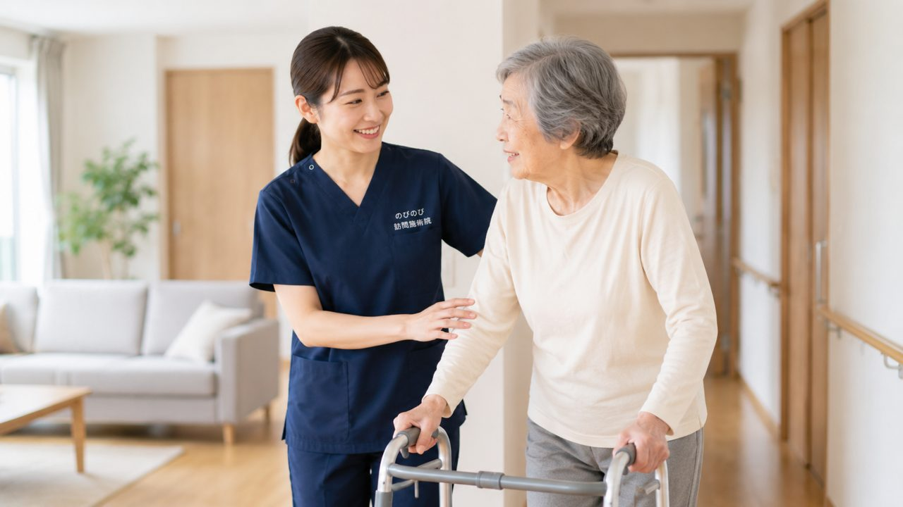

スーパーへの道の途中で足がしびれ、ベンチで休むとまた歩ける。腰から足が重だるく、前かがみで手押し車に寄りかかると楽になる。以前は往復できた道を、今は何度も立ち止まらないと進めない。こうした歩き方は、高齢の方に多い脊柱管狭窄症でよく見られます。歩ける距離が少しずつ短くなり、外出そのものがおっくうになる方も少なくありません。ここでは、間欠性跛行という現れ方と、通院がむずかしいときの訪問という選択肢についてお伝えします。
この記事のポイント
脊柱管狭窄症の治療は整形外科など医療機関が主で、手術やブロック注射、内服といった選択肢があります。訪問鍼灸・マッサージは、原因がはっきりして落ち着いた慢性期に、腰や足のこわばりを和らげ血のめぐりを促す補助的なケアです。狭窄そのものは治せませんが、動ける範囲を保つ手伝いはできます。費用は医師の同意にもとづく医療保険で、1回総額3,950円、1割の方で約395円ほど。介護保険の限度額とは別枠です。ただし、急に両足の力が入らない、尿や便が出にくい・漏れるといった変化があるときは、鍼灸より先に医療機関を受診してください。
少し歩くと足がしびれる。それが脊柱管狭窄症のサイン
背骨の中には、神経の通り道である脊柱管というトンネルがあります。年齢を重ねると、骨が変形したり、まわりの靭帯が厚くなったりして、このトンネルが少しずつ狭くなることがあります。狭くなった場所で神経が圧迫される。すると腰から足にかけて、しびれや重だるさが出てきます。脊柱管狭窄症は、こうして起こります。
特徴的なのは、じっとしているときより歩いたときに症状が強まる点です。台所に立ちっぱなしでいるとお尻から太ももが張ってくる。買い物の帰り道、途中から足が自分のものでないように重くなる。そんな訴えをよく聞きます。痛みそのものより、しびれと脱力感が生活の邪魔をする。ここが、この症状の厄介なところです。
間欠性跛行。歩いては休み、前かがみになると楽になる
脊柱管狭窄症でいちばん多い相談が、間欠性跛行と呼ばれる歩き方です。少し歩くと足がしびれて動かしにくくなる。そこで立ち止まって休むと、また歩けるようになる。この繰り返しです。「昔は駅まで一気に歩けたのに、今は二回、三回と休まないとたどり着けない」という方がよくいらっしゃいます。歩ける距離が、その日の体調のものさしになっていきます。
姿勢による差もはっきりしています。腰を反らして胸を張る姿勢はつらく、少し前かがみになると神経の通り道が広がって楽になる。だから信号待ちで前かがみになると休まる方が多いのです。手押し車を押していると背中が丸まるので長く歩ける。自転車なら前傾姿勢のまま何キロも走れるのに、歩くと数十メートルで足が止まる。そんな逆転が起きるのも、この症状ならではです。
同じ足のしびれでも、原因はいろいろあります。前かがみでかえって痛むタイプは、比較的若い世代に多い腰椎椎間板ヘルニアと足の痛み・しびれのことがあります。お尻から足の裏側に線を引いたように痛みが走る場合は、坐骨神経痛・長引く腰の痛みとして整理したほうがよいこともあります。前かがみで楽になり、休むとまた歩ける。この歩行のパターンが、狭窄症を疑う手がかりになります。
こんなときは、鍼灸より先に主治医へ
ただし、急いで医療機関にかかってほしいサインがあります。急に片足や両足に力が入らなくなった。足のしびれが短い間に一気に強くなった。おしっこや便が出にくい、あるいは我慢できずに漏れてしまう。こうした変化があるときは、施術を後回しにしてでも、まず主治医の診察を受けてください。神経への強い圧迫が疑われ、手術など早めの対応が必要な場合があるからです。
のびのび訪問施術院の役割は、あくまで医療機関の治療を支える側にあります。診断や治療の中心はお医者さんです。私たちは、そこに寄り添う立場だと考えています。
鍼灸やマッサージでできること、できないこと
正直にお伝えします。鍼やお灸で、狭くなった脊柱管そのものを広げることはできません。骨や靭帯の変形を元に戻す方法でもありません。病気を治すものではない、という点は誤解のないようにしたいところです。
一方で、できることもあります。神経が圧迫されると、そのまわりの筋肉は身構えるように硬くなります。腰やお尻、太もも、ふくらはぎ。この張りをやわらげ、血のめぐりを助けていくと、しびれに伴う重だるさや、こわばりが楽に感じられることがあります。歩ける距離が少し延びたと話される方もいます。ただし感じ方には個人差があり、同じ施術でも人によって受け取り方は違います。効果を約束するものではない、とご理解いただいたうえでお使いください。
訪問だから、寝たまま受けられる
歩くとつらい方ほど、施術所まで通うこと自体が負担になります。訪問なら、その一番大変な移動がいりません。ご自宅の布団やベッドで横になったまま受けられます。前かがみで楽になる方には、抱き枕を使って少し丸まった姿勢をとってもらうなど、その方が一番楽な体勢に合わせて進めます。
お体をみるときは、腰の反り具合、お尻から太もものつっぱり、ふくらはぎの張り、足首の動きなどを一つずつ手で確かめます。どこが硬く、どの動きで症状が出るのか。その日ごとに変わるので、毎回確認しながら加減を決めていきます。関節を動かしたり、寝たままでできる簡単な運動を一緒に行う機能訓練も、鍼灸に加えるケアとして行っています。これは追加料金がかかるものではなく、通常の施術の一部としてお受けいただけます。
費用と保険のしくみ
脊柱管狭窄症という病名そのものは、はり・きゅうの保険対象として定められた正式な病名ではありません。保険の対象とされる代表的な病名は、神経痛・リウマチ・頸肩腕症候群・五十肩・腰痛症・頸椎捻挫後遺症です。ただ、狭窄症の方でも、医師が神経痛や腰痛症などとして治療の必要を認め、同意書を書いてくださった場合には、医療保険（はり・きゅう）の対象になりえます。まずは主治医にご相談ください。
費用は、1回の総額が3,950円です。医療保険が使えると、自己負担はその一部で済みます。負担割合が1割の方でおよそ395円が目安です。たとえば週2回受けた場合、1割の方で月におよそ3,160円。出張にかかる費用も、施術範囲の地域であればこの中に含みます。
受けるのに要介護認定は必要ありません。介護保険を使っている方でも、その限度額とは別の枠になるので、デイサービスやヘルパーと併用できます。ひとつ注意点として、同じ部位について医療保険のリハビリを受けている場合、そこと鍼灸を同時に保険で算定することはできません。この点は事前に確認しながら進めます。
暮らしの工夫と、動ける範囲を保つこと
日々の中でできることもあります。長く立ちっぱなしにならないよう、こまめに腰かける。歩くときは少し前かがみを意識すると、楽に進めることがあります。外出には手押し車や杖が心強い味方になります。前かがみの姿勢を自然に保てて、いざとなれば腰かけて休めるからです。腰やお尻を冷やさないことも、こわばりを和らげる助けになります。
歩ける距離が短くなると、外に出るのがおっくうになり、足の筋力がさらに落ちていく。この流れをどこかで止めたい、というのが訪問でお手伝いする一番の目的です。狭窄症とは長い付き合いになることが多い症状です。無理に距離を延ばそうと頑張るより、今できている動きを守っていく。その積み重ねが、暮らしの張り合いにつながっていくと考えています。
よくある質問
鍼灸で脊柱管狭窄症は治りますか？
せまくなった脊柱管そのものを鍼灸で広げることはできません。鍼灸ができるのは、腰や足のこわばった筋肉を和らげ、めぐりを促して、しびれや痛みにともなう不快感を軽くする手伝いです。まず整形外科などで原因や状態を確かめていただき、落ち着いた慢性期のケアとしてお考えください。
少し歩くと足がしびれて休んでしまいます。受けられますか？
間欠性跛行のような症状で、医師が必要と認め、通院がむずかしければ対象になる場合があります。まずは整形外科などで診てもらい、原因や状態を確かめてから始めましょう。手続きに必要な医師の同意書は、のびのびが引き受けます。
前かがみだと楽なのに、まっすぐ立つとしびれます。なぜですか？
前かがみになると脊柱管が広がり、神経への圧迫がゆるむためだと考えられています。脊柱管狭窄症でよく見られる特徴で、自転車には乗れるのに歩くとつらい、という方もいます。外出のときは腰かけられる場所を確かめておくと安心です。
足に力が入らないのですが、受けてよいですか？
急に両足の力が入らない、尿や便が出にくい・漏れるといった変化があるときは、鍼灸より先に医療機関を受診してください。神経が強く圧迫されているおそれがあり、早い対応が必要な場合があります。状態が落ち着いてからケアを行います。
手術やブロック注射をすすめられています。鍼灸はやめるべきですか？
医療機関の治療が主で、鍼灸はその併用の補助です。手術やブロック注射といった選択肢を避けたり遅らせたりするものではありません。主治医の治療を続けながら、間の日の腰や足のこわばりを和らげる役どころとお考えください。気になることは主治医にもご相談ください。
寝たままでも受けられますか？
はい。歩くとつらい方が多いため、横になったまま受けられるようにしています。うつ伏せがつらい方は、横向きや仰向けなど、その日に楽な姿勢に合わせます。ベッドやお布団の上で受けられるので、起き上がって移動する負担もありません。
費用はいくらくらいですか？
1回の施術は総額3,950円で、1割の方の自己負担はおよそ395円が目安です。週2回ならひと月およそ3,160円（1割の方）ほど。医療保険で計算し、介護保険の限度額とは別枠です。別途の出張費はかからず、エリア内は同額です。
対応エリアはどこですか？
大阪府は豊中市・吹田市・茨木市・高槻市・箕面市・摂津市・池田市、大阪市は淀川区・東淀川区・都島区・北区・旭区、兵庫県は尼崎市・伊丹市です。エリア内はどこでも同額で、別途の出張費はかかりません。まずは対象になるかどうかからご相談いただけます。